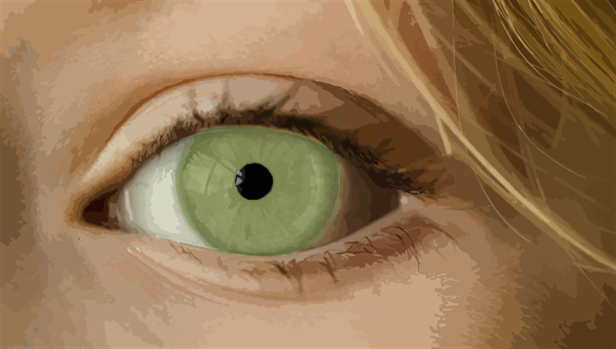

Si j'étais un des cinq sens, je serais...
La vue, parce que c’est le plus important, celui
qu’on entretient le plus, celui qui nous rend le plus lucide possible. De plus, dans le milieu
de
l’audiovisuel, donc celui dont je suis passionné, il est impossible de travailler sans yeux,
c’est
pour cela que j’y tiens tant.